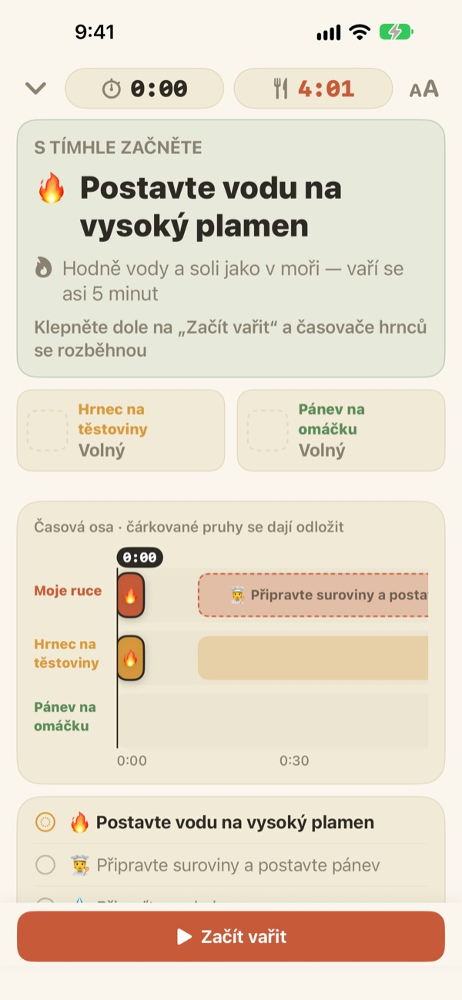
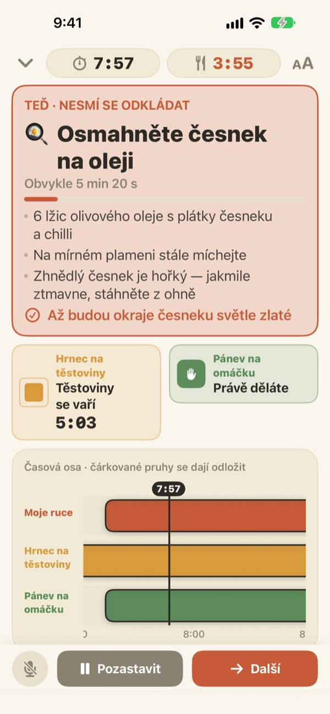
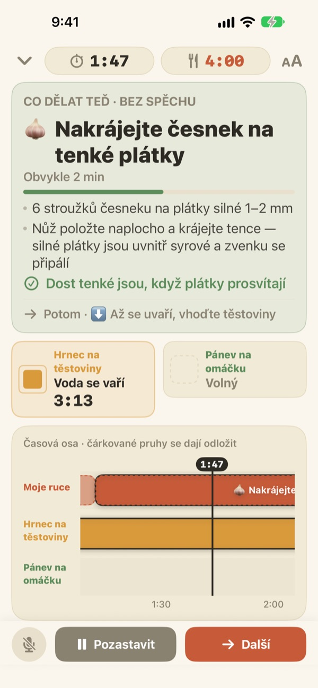
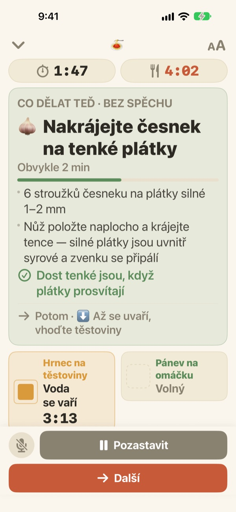

Těstoviny se vaří.
Omáčka mezitím taky.
Když dva hrnce jedou každý jiným tempem, Geusaie velkým písmem ukáže jedinou věc, kterou mají vaše ruce udělat právě teď. Omáčka se plánuje pozpátku od chvíle, kdy budete těstoviny scezovat.
Všechny funkce jsou zdarma. Účet není potřeba.

Vyzkoušejte si to
Uvařte si aglio e olio dvacetkrát rychleji. Klepněte na Začít vařit a pak na Další pokaždé, když byste úkol měli hotový. Všimněte si, jak se karta změní, když přijde čas scedit těstoviny.
Tři minutky, a těstoviny stejně rozvařené?
Jedna minutka na těstoviny, druhá na omáčku a česnek hlídáte z hlavy, až nevíte, co je na řadě dřív. Zrovna krájíte, když se má scezovat, a omáčka dojede o dvě minuty později. Geusaie zná recept jako „nejdřív tohle, pak tamto“, a tak vám řekne jen jednu věc, kterou máte udělat teď.
Co nepočká, zčervená
Scedit těstoviny, sundat česnek, než se připálí: když by zpoždění zkazilo jídlo, karta se zbarví terakotově a řekne vám, ať krájení na chvíli odložíte.
Když je hrnec hotový, přijde oznámení, i když se zrovna nedíváte, a v něm to, co máte hned udělat.

Krájení, když máte volné ruce
Krájení česneku, strouhání sýra, odvažování: nic z toho nemá pevný čas, a tak se tu sekundy nepočítají. Proužek se plní, jen když máte volné ruce, zastaví se, když volá hrnec, a pak pokračuje tam, kde jste přestali.
Zapnete plotýnku o tři minuty později? Všechno další se posune o tři minuty. Plán se pokaždé přepočítá podle toho, co jste skutečně udělali.

Opřete o linku a pokračujte hlasem
Čtyři velikosti písma, abyste přečetli text i z kroku dvou, a obrazovka při vaření nezhasne.
Mokré ruce? Řekněte další a aplikace přejde k dalšímu úkolu bez dotyku.

Ke stolu ve třech krocích
- 1
Vyberte jídlo
Uvidíte, jak dlouho zhruba trvá a kolik hrnců potřebujete.
- 2
Klepněte na Začít vařit
Nejdřív se ukáže první úkol a hodiny hrnců se rozběhnou v okamžiku klepnutí.
- 3
Hotovo? Další.
Klepněte na tlačítko nebo řekněte „další“ a objeví se další úkol.
Barva říká, jak moc to spěchá
- Zelená
- Příprava. Klidně v pohodě.
- Hořčicová
- Na řadě je hrnec. Udělejte to teď, ale bez spěchu.
- Terakotová
- Když počkáte, těstoviny se rozvaří nebo česnek připálí. Teď hned.
- Políčka hrnců
- Zmenšující se čtverec je zbývající čas. Čas hrnců se nikdy neschovává.
Na časové ose jsou čárkované pruhy úkoly, které můžou počkat.
Všechny funkce jsou zdarma
Zdarma
- Oba recepty
- Samostatný časovač pro každý hrnec a celá časová osa
- Oznámení, když je hrnec hotový
- „Další“ hlasem
- Čtyři velikosti písma
- Otevření receptu přes Siri nebo Zkratky
Podpořte vývojáře (dobrovolně)
- Pokud vám aplikace pomáhá, můžete v Nastavení poslat malé spropitné
- Spropitné nic neodemyká. I bez něj máte všechny funkce
Jednorázové spropitné, žádné předplatné.
Žádný účet, žádné reklamy a funguje i bez internetu.
Časté otázky
Říkám „další“, ale nic se neděje.
Tlačítko mikrofonu vlevo dole je červené, když aplikace poslouchá, a šedé, když je vypnuté. Poprvé povolte mikrofon i rozpoznávání řeči; pokud jste je zamítli, zapněte je znovu v Nastavení > Geusaie. Aplikace poslouchá slovo napsané na tlačítku Další. V hodně hlučné kuchyni prostě klepněte na Další.
Hrnec je hotový, ale oznámení nepřišlo.
Zkontrolujte, že máte zapnutá oznámení v Nastavení > Oznámení > Geusaie. Režim soustředění je může ztlumit. Oznámení chodí jen tehdy, když je hrnec hotový; příprava vás nikdy nehoní.
Co se stane s plánem, když začnu později?
Přepočítá se podle toho, co jste skutečně udělali. Zapnete-li plotýnku o tři minuty později, všechno další se posune o tři minuty a omáčka zůstane naplánovaná pozpátku od chvíle, kdy budou těstoviny hotové.
Písmo je moc malé.
Na obrazovce vaření klepněte vpravo nahoře na tlačítko velikosti písma a vyberte Normální, Velký, Větší nebo Největší. Volba se zapamatuje.
Zhasne obrazovka při vaření?
Ne. Během vaření obrazovka zůstává zapnutá, takže na ni nemusíte sahat mokrýma rukama.
Jaká jídla jsou k dispozici?
Aglio e olio (asi 15 minut, 2 hrnce) a těstoviny v rajčatovo-smetanové omáčce (asi 20 minut, 2 hrnce) podle receptů ze Serious Eats, Gimme Some Oven, RecipeTin Eats a The Burnt Butter Table. Hodí se jakékoli jídlo, kde se vaří ve dvou hrncích zároveň, tak nám napište, jaký recept byste chtěli.
Nahrává se můj hlas?
Ne. Aplikace poslouchá jen slovo „další“ a zvuk nenahrává ani neukládá. Pokud to zařízení podporuje, rozpoznávání probíhá přímo v něm. Neshromažďují se žádné osobní údaje.
Dá se otevřít přes Siri?
Ano. Vyberte jídlo v Siri nebo v aplikaci Zkratky a hned se otevře jeho obrazovka vaření. Hodiny se rozběhnou, až budete připraveni postavit vodu a klepnete na Začít vařit.
Na jakých zařízeních funguje?
Na iPhonu a iPadu s iOS 17 nebo novějším. Účet ani připojení k internetu nejsou potřeba.
Jak nahlásit problém nebo navrhnout recept?
V aplikaci přes Nastavení > Odeslat zpětnou vazbu, nebo e-mailem na adresu níže. Model zařízení a verze iOS nám pomůžou podívat se na to rychleji. Obvykle odpovídáme do několika dnů.
Něco nejde, něco je divné nebo máte recept na mysli? Napište na leeo@kakao.com.